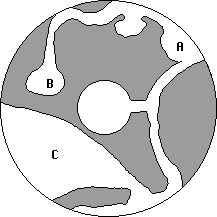

he next tower had a random series of numbers carved above the lintel, of
no apparent significance or order. Kurik cast Detect Enemies, finding two on
the western side of the tower. The entry hallway held doors to either side
which led only to empty rooms. The central chamber beyond (marked
"A" on the map) was strewn with broken glass, piles of decayed
wood and metal, and crumbled masonry. Mirrors had once lined the walls but
were now smashed and scattered. Fifteen platinum pieces were littered
amongst the rubble, as well as a strange disk of metal painted with symbols
along its edge. Adorned with pictures of cherries, horizontal black bars,
and the number "7", the players quickly figured out that it was part of a
slot machine. The characters remained perplexed.
he next tower had a random series of numbers carved above the lintel, of
no apparent significance or order. Kurik cast Detect Enemies, finding two on
the western side of the tower. The entry hallway held doors to either side
which led only to empty rooms. The central chamber beyond (marked
"A" on the map) was strewn with broken glass, piles of decayed
wood and metal, and crumbled masonry. Mirrors had once lined the walls but
were now smashed and scattered. Fifteen platinum pieces were littered
amongst the rubble, as well as a strange disk of metal painted with symbols
along its edge. Adorned with pictures of cherries, horizontal black bars,
and the number "7", the players quickly figured out that it was part of a
slot machine. The characters remained perplexed.
Early draft of the RTOH Screenplay 544 INT -- INTERIOR OF MOILIAN TOWER -- LATE AFTERNOON Haer Gronagin dashes directly toward camera, which dollies upwards as he runs underneath shot. Focus on Computer Generated Undead facing camera, ivory skeleton visible through skin of ice, malevolent gaze fixed on the fleeing halfling. Its hands glow with a cold, black fire which casts eerie shadows throughout the room. Rosvenir hits it with a magic spell, more CGI. [[Try to get a good lightning effect, like Zeus's thunderbolts in Xena]] The black flame on its hands sputters out briefly, then relights. Kurik Steadfast steps forward and says "BEGONE!" in powerful voice, echo from walls of the room in full Dolby 5+1 glory. [[Try to get some CGI glowy effect around his head so the audience will know he cast a spell.]] The Undead whirls about and claws at the paladin, catching him on fire with the strange black flame. [[Limited budget won't afford ILM, try to find some sucker with Poser and some 3d apps to generate the shot in his spare time.]]
The Narrator
Kurik's Repel Undead was powerfully cast, yet the creature
shrugged it off as a mere annoyance. The black flame spread across the
paladin's skin and clothing, but did not consume what it burned nor give off
heat. Kurik felt himself weakening [Editor's note: he was losing
points of Temporary Constitution.]
Mystical created a Wall of Flame between the monster and
Kurik, but it jumped through without hesitation. The black flame on its
hands again guttered out briefly before relighting. Zem waded into the fray,
swinging his broadsword in wide, parrying arcs trying to force it away from
Kurik. The thing clawed at Zem but fortunately did not spread the black
flame to him. Feeling the worsening situation justified the experiment,
Rosvenir activated the Wand of Days. The
room was bathed in an intense light, and the Undead moldered instantly to
dust.
Kurik's report to the Church, delivered via Tithing
Bag
The black flames continued to spread, and I felt the stength
being drained from me. I noted the flame on its hands had winked out briefly
when hit by Rosvenir's Starbolt, and again when it jumped through the
Wall of Fire. Steeling myself with a quick recitation of the Litany I
walked slowly through the flaming wall. The black fire was extinguished,
replaced by a conflagration of the more mundane sort which my companions
helped to extinguish. The black fire continued to burn on the floor where
the creature's hands had fallen to dust. I regret there is no safe way for
me to send a sample for further analysis, but I urge you to spread the
information that the black flame can be defeated by magical fire.
There were areas cleared of ice on the floor of the tavern of
vaguely humanoid shape, like the one discovered
earlier. Desiring understanding, I
implored Pandeos to allow me the knowledge of how this poor creature had
died and been turned Undead. The Death's Tale showed a simple farmer
pushing a cart down a city street. Tall towers ringed the landscape, casting
shadows from the bright sun above. I believe this was Moil before the
cataclysm. Suddenly the sky blackened, and the townspeople on the street
dropped to the ground. The poor wretch also succumbed, falling into a deep
slumber at the touch of the magic of Orcus. He died of starvation, still
asleep. Somehow his remains were moved here, and frozen into a column of
ice. I look forward to the encounter with the evil being who did this, that
I might avenge the wrong done these people.
The Narrator
Kahlen healed Kurik and Zem as best she could, but noted her
spells were becoming less effective the longer they stayed in Moil. The room
to the east contained a staircase leading down to a lower level. The party
decided to complete the exploration of the upper level before venturing
down, and so made for the western side of the tower where a long hallway
held five doors. Rosvenir cast Merging to see what was beyond. Each
door led to a small chamber. In one such (marked "D" on the map)
was a naked human body slumped over the broken remnants of a wooden table.
About two hundred small pieces of paper were scattered across the floor,
though they were too far away for the astrologer to see clearly. Scattered
atop everything was a broken mirror which had fallen from the ceiling.
Rosvenir felt some sort of spell effect radiating from the body, which he
was able to resist. Continuing on, the next several rooms were empty. The
final doorway (marked "E" on the map) was made of metal and
inscribed with "Final Round Game." Rosvenir decided to forgo
merging with the wall of this cell.
The day had been a long one. Choosing a defensible room to one
side, the exhausted party got some rest. Rosvenir cast Dream IV to
know of the things mentioned in Acerak's poem from
the obelisk
Rosvenir's Dream
Standing before the obelisk, watch it split into three pieces.
The first morphs into the vague outline of a great wyrm, and gathers speed as
it changes shape again to a cylindrical tower. Two bridges connect it to
other towers, and an iron triangle is attached at two points at its peak.
The second piece of the obelisk stretches thin and curves back
upon itself, forming a mesh. It speeds off as it changes form into a
another tower, with a single bridge connecting it. It is graced with
rectangular designs and a single spike at its peak.
The third piece of the obelisk never fully coalesces, instead
existing as a shroud of darkness with the sound of many feet scuffling until
it too changes to the shape of a tower. It has a single bridge very low on
one side, and is topped by an inverted triangle.
Day 26
This was an unusually detailed and helpful dream. Exhortations
from the GMs shortly before to, "Focus, people." might have had
something to do with this. The party was able to identify each of the three
towers from the vision, determining the location of the items listed in
Acerak's instructions. Now motivated, the group proceeded to the tower where
the vision indicated the Brine Dragon would be. The smell of salt was easily
distinguished as they approached. There was no inscription above the lintel
of this tower, and the path terminated in a small ledge. Forty feet below,
lapping softly against the stone walls, a salt water pool filled the tower.
A rusty iron ladder was bolted to the wall next to the ledge where the party
stood. It extended down until disappearing in the briny depths below.
Rosvenir knew a little something of brine dragons. [Editor's
note: this is an understatement. He rolled a natural 100, channeled Tiamat,
and recited everything there is to know about Brine Dragons.] They are
rather large, sometimes reaching ninety feet in length. They can breathe in
salt water but not in fresh water nor air. Their breath weapon is a cloud
of acid, though their jaws are powerful and their teeth very sharp. They
feed by absorbing salt through their skin, and for this reason tend to line
their lairs with sheets of crystallized salt. Like other dragons, they hoard
shiny objects and wealth. They do not have wings, but do have webbed feet
allowing them to move quickly underwater.

The initial plan to retrieve the key was to fly down the outside of
the tower and puncture it somehow, allowing the salt water to drain out. The
dragon, unable to breathe air, would suffocate and the key could be
recovered with little risk. The success of the plan rested on proper
placement of the hole to make sure the water drained. Someone would have to
scout around the depths to ensure this. Rosvenir and Zem cast spells
allowing freedom of movement and resistance against the bitter cold, and a
spell to allow mental communication. They then climbed down the ladder and
dove beneath the surface. Approximately sixty feet below they came to a huge
outcropping of salt filling the tower from the bottom. A cave was visible
leading back into darkness.
The two adventurers entered the cave and followed it around to
the left. They came to a room near the outer wall of the tower (marked
"A" on the map). An extensive rune had been carved into a sheet of
metal. It was free of rust and could be clearly read. Unfortunately it was a
Dispel Magic rune of 100th level. Amazingly, Rosvenir's Water
Breathing spell survived the effect, but Zem was not so fortunate and
found himself unable to breathe or move while eighty feet beneath the
surface. Rosvenir cast Air Bubble to envelop Zem, allowing him to
breathe once again. The pair recast the spells they had lost.
Continuing on, the tunnel came to an abrupt end in a small
chamber (marked "B" on the map). Two skeletons were embedded in
one wall of the chamber, covered with a thick layer of salt. One of them
distinctly seemed to be pointing at the ceiling. Refusing to be distracted
from their objective, the adventurers turned around to retrace their steps
back to the first fork of the tunnel.
This direction proved more fruitful. The dragon's lair opened
before them (marked "C" on the map). Atop mounds of coins,
sculptures, and other treasures slept a medium sized dragon. Its hide was
mottled and irregular, with huge chunks of salt encrusted along its length.
A soft glow emanated from atop a pillar of salt near the center of the lair.
A silver key was secreted at the top of the pillar, and was the source of
the illumination.
Zembahk Kaydian
The salt pillar containing the key appeared fragile to my eye.
Were the tower punctured, I believe it would have broken under the force of
the rushing water and the key would be lost. Instead, the elf and I
determined to obtain it by stealth and magic. Rosvenir cast a spell of
communication to speak with Kahlen, that she and the others might know of
our intentions. I would swim back to the surface and wait by the ladder.
Were anything to go wrong I would intercept the beast as it swam. Rosvenir
would use two spells of teleportation, the first to move the key to his hand
and the second to move himself to the location secured by his mental link
with Kahlen. Upon his safe arrival I would climb the ladder.
The plan was effective. Rosvenir appeared beside Kahlen, who
called down to me. As I climbed, the water below began to churn as a huge
form shook itself awake. The dragon roared its frustration as I climbed
higher, but could do me no harm from below. I rejoined my companions, and we
left the tower.